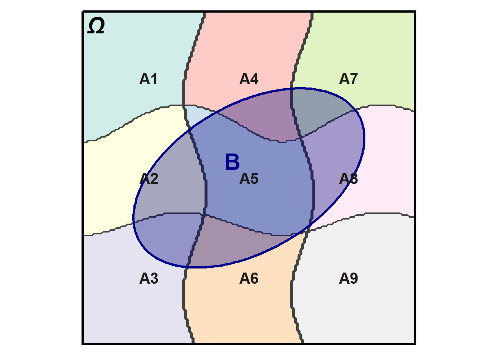

Sesión 9: Pruebas Diagnósticas I
Teorema de Bayes: validación y rendimiento de una prueba diagnóstica
Objetivos de aprendizaje.
- Comprender los fundamentos de la validación diagnóstica en biomedicina.
- Construir e interpretar correctamente tablas de contingencia de \(2 \times 2\).
- Calcular e interpretar analíticamente la sensibilidad, la especificidad, el valor predictivo positivo (VPP) y el valor predictivo negativo (VPN).
- Analizar el impacto crítico de la prevalencia de la enfermedad mediante el Teorema de Bayes aplicado a la práctica clínica.
Introducción.
Repaso de conceptos de probabilidad necesarios.
El cálculo de probabilidades es la teoría matemática que nos permite analizar los fenómenos en los que interviene el azar. Para ello, utiliza el concepto de espacio probabilístico \(\{\Omega,\mathcal{A},P\}\) que puede ser un espacio totalmente especificado (como el lanzamiento de un dado perfecto), pero también permite construir espacios probabilísticos adaptados a situaciones experimentales concretas.
Para este último objetivo, para construir espacios adaptados a situaciones concretas, necesitamos realizar observaciones sobre la realidad, en realidad, una observación limitada de la misma, y es aquí donde entra en juego la estadística inferencial.
La estadística inferencial nos permiteo obtener información acerca de la ley de probabilidad que gobierna un fenómeno a partir de la observación no exhaustiva de l mismo. Aunque solemos distuingir entre estadística descriptiva e inferencial, el objetivo de la estadística es hablar de la población lo que en el fondo supone inferir sobre la población a partir de nuestra limitada muestra.
Experimento Aleatorio y Espacio Muestral
Experimento Aleatorio:
- Se puede repetir en las mismas condiciones indefinidamente.
- Partiendo de las mismas condiciones iniciales, pueden darse resultados diferentes.
- Todos los resultados posibles se conocen por anticipado.
- No se puede predecir cuál ocurrirá en una experiencia en particular.
- La frecuencia relativa con la que aparece un determinado suceso, tiende a su probabilidad.
Espacio Muestral (\(\Omega\)): Conjunto compuesto por todos los resultados posibles del experimento aleatorio.
- Resultado elemental (\(\omega \in \Omega\)): Desenlace individual e indivisible.
- Ejemplo: Lanzamiento de un dado, \(\Omega = \{1, 2, 3, 4, 5, 6\}\).
Tipos de Espacios Muestrales
| Tipo de Espacio | Ejemplo Biomédico | Espacio Muestral (\(\Omega\)) | Suceso de Interés (\(A \in \mathcal{A}\)) |
|---|---|---|---|
| Finito | Grupo sanguíneo | \(\Omega = \{A, B, AB, O\}\) | “Compatibilidad con A” \(\rightarrow A=\{A, O\}\) |
| Infinito Numerable | Nº de crisis asmáticas/año | \(\Omega = \{0, 1, 2, 3, \dots\}\) | “Más de 3 crisis” \(\rightarrow A=\{4, 5, 6, \dots\}\) |
| No Numerable (Continuo) | Glucosa en ayunas (mg/dL) | \(\Omega = (0, +\infty)\) | “Criterio de diabetes” \(\rightarrow A = [126, +\infty)\) |
Espacio Probabilístico \((\Omega, \mathcal{A}, P)\)
Un espacio probabilístico es la estructura matemática que modela un experimento aleatorio definida por la terna \((\Omega, \mathcal{A}, P)\):
- \(\Omega\): Espacio muestral (todos los resultados elementales).
- \(\mathcal{A}\): \(\sigma\)-álgebra de sucesos (colección de subconjuntos de \(\Omega\) cerrada respecto al complementario y uniones numerables).
- \(P\): Medida de probabilidad \(P: \mathcal{A} \rightarrow [0,1]\) que satisface los axiomas.
Estructura Algebraica: Álgebra y \(\sigma\)-Álgebra
Álgebra de Sucesos (\(\mathcal{A}\)):
- Contiene a \(\Omega\) (y por tanto a \(\emptyset\)).
- Cerrada bajo complementación (\(A \in \mathcal{A} \implies A^c \in \mathcal{A}\)).
- Cerrada bajo uniones finitas (\(A_1, \dots, A_n \in \mathcal{A} \implies \bigcup_{i=1}^n A_i \in \mathcal{A}\)).
\(\sigma\)-Álgebra de Sucesos (\(\mathcal{A}\)):
- Mismas propiedades, pero cerrada bajo uniones numerables infinitas:
\[A_1, A_2, \dots \in \mathcal{A} \implies \bigcup_{i=1}^{\infty} A_i \in \mathcal{A}\]
Operaciones Lógicas con Sucesos
| Propiedad | Unión (\(\cup\)) | Intersección (\(\cap\)) |
|---|---|---|
| Conmutativa | \(A \cup B = B \cup A\) | \(A \cap B = B \cap A\) |
| Asociativa | \((A \cup B) \cup C = A \cup (B \cup C)\) | \((A \cap B) \cap C = A \cap (B \cap C)\) |
| Distributiva | \(A \cup (B \cap C) = (A \cup B) \cap (A \cup C)\) | \(A \cap (B \cup C) = (A \cap B) \cup (A \cap C)\) |
| Leyes de De Morgan | \((A \cup B)^c = A^c \cap B^c\) | \((A \cap B)^c = A^c \cup B^c\) |
| Elemento Neutro | \(A \cup \emptyset = A\) | \(A \cap \Omega = A\) |
| Absorción | \(A \cup \Omega = \Omega\) | \(A \cap \emptyset = \emptyset\) |
Definiciones y Axiomas de Probabilidad
Enfoques de Probabilidad
- Clásica (Laplace): Para sucesos equiprobables, \[P(A) = \frac{\text{Número de casos favorables}}{\text{Número de casos posibles}}\]
- Frecuentista (Empírica / Objetiva): \(\textit{a posteriori}\). \[P(A) = \lim_{n \to \infty} \frac{n_A}{n}\]
- Bayesiano (Subjetiva): \(\textit{a priori}\). Representa el grado de creencia o certeza sobre la ocurrencia de un suceso.
Axiomas de Kolmogorov
Sea \((\Omega, \mathcal{A}, P)\) un espacio probabilístico:
Axioma 1: \(P(A) \ge 0, \quad \forall A \in \mathcal{A}\)
Axioma 2: \(P(\Omega) = 1\)
Axioma 3: Para cualquier sucesión de sucesos mutuamente disjuntos (\(A_i \cap A_j = \emptyset, \, i \ne j\)):
\[P\left( \bigcup_{i=1}^{\infty} A_i \right) = \sum_{i=1}^{\infty} P(A_i)\]
Propiedades y Teoremas Fundamentales
Suceso Complementario: \(P(A') = 1 - P(A)\)
Suceso Imposible: \(P(\emptyset) = 0\)
Inclusión: Si \(A \subset B \implies P(A) \le P(B)\) y \(P(B \setminus A) = P(B) - P(A)\)
Acotación: \(0 \le P(A) \le 1\)
Ley aditiva de la probabilidad:
\[P(A \cup B) = P(A) + P(B) - P(A \cap B)\]
Para 3 sucesos:
\[P(A_1 \cup A_2 \cup A_3) = P(A_1) + P(A_2) + P(A_3) - P(A_1 \cap A_2) - P(A_1 \cap A_3) - P(A_2 \cap A_3) + P(A_1 \cap A_2 \cap A_3)\]
Probabilidad Condicionada e Independencia
Independencia de Sucesos
Dos sucesos \(A\) y \(B\) son independientes si la ocurrencia de uno no modifica la probabilidad del otro:
\[P(B \mid A) = P(B) \iff P(A \cap B) = P(A) \cdot P(B)\]
Note¡Atención!
- Disjuntos (Incompatibles): \(A \cap B = \emptyset \implies P(A \cap B) = 0\).
- Dos sucesos incompatibles con probabilidades no nulas NUNCA son independientes, pues saber que ocurrió uno implica que no puede ocurrir el otro.
Probabilidad Condicionada y ley multiplicativa de la probabilidad.
La probabilidad del suceso \(B\) dado que ha ocurrido \(A\) (con \(P(A) > 0\)) es:
\[P(B \mid A) = \frac{P(A \cap B)}{P(A)}\]
De aquí se deriva la ley multiplicativa:
\[P(A \cap B) = P(A) \cdot P(B \mid A)\]
Para \(n\) eventos:
\[P(A_1 \cap A_2 \cap \dots \cap A_n) = P(A_1) \cdot P(A_2 \mid A_1) \cdot P(A_3 \mid A_1 \cap A_2) \cdots P(A_n \mid \bigcap_{i=1}^{n-1} A_i)\]
Sistema completo de sucesos.
Un sistema completo de sucesos es un espacio de sucesos en el que:
- Todos los sucesos son incompatibles entre sí.
- La unión de todos es el espacio completo de sucesos.
\[P\Big( \bigcup_{i=1}^{k} A_{i,j}\Big) = P(\Omega) \]
\[P(A_i \cap A_j)=P(\emptyset)\]
Teorema de la Probabilidad Total y Teorema de Bayes
Sea \(A_1, A_2, \dots, A_k\) una partición de \(\Omega\) (sistema completo de sucesos disjuntos cuya unión es \(\Omega\)):
Probabilidad Total:
\[P(B) = \sum_{i=1}^{k} P(A_i) \cdot P(B \mid A_i)\]
Teorema de Bayes:
\[P(A_j \mid B) = \frac{P(A_j) \cdot P(B \mid A_j)}{\sum_{i=1}^{k} P(A_i) \cdot P(B \mid A_i)}\]
Teorema de Bayes aplicado al diagnóstico:
El T. de Bayes aplicado a una causa binaria \((E , \bar{E})\) permite entender los factores que relacionan la probabilidad anterior \(P(E)\) y la \(P({E \mid S})\).
\[P(E \mid S) = \frac{P(E) \cdot P(S \mid E)}{P(E) \cdot P(S \mid E)+P(\bar{E}) \cdot P(S \mid \bar{E})}\] Como se puede ver:
- La probabilidad posterior \(P({E \mid S})\) depende de la probabilidad anterior \(P(E)\).
- Un síntoma o un resultado diagnóstico solo contribuye a detectar la enfermedad si este y la enfermedad NO SON INDEPENDIENTES.
- Siendo cierta la anterior, los síntomas que ayudan a diagnosticar enfermedades no son los más frecuentes en los pacientes sino aquellos cuya frecuencia es muy diferente en enfermos \((E)\) y no enfermos \((\bar{E})\) .
Validación Diagnóstica y Matrices de Confusión.
Todas las probabilidades condicionadas que aparecen en la formulación anterior puede calcularse en tablas de contingencia que enfrenten el resultado del test diagnóstico o el síntoma con el gold standar que define la enfermedad, en teoría, no siempre, de manera inequívoca.
Estructura de la Matriz \(2\times2\)
En investigación clínica, validar una nueva prueba diagnóstica requiere enfrentar su resultado frente a un patrón de referencia u gold standard (patrón oro).
La estructura básica se resume en la siguiente tabla1.
En función de la relación entre el resultado y la verdad, al menos la verdad medida por el gold standard.
| Enfermo (\(D+\)) | Sano (\(D-\)) | Total | |
|---|---|---|---|
| Positivo (\(T+\)) | \(VP\) | \(FP\) | \(VP + FP\) |
| Negativo (\(T-\)) | \(FN\) | \(VN\) | \(FN + VN\) |
| Total | \(VP + FN\) | \(FP + VN\) | \(N\) |
\(VP\): Verdaderos Positivos \(FP\): Falsos Positivos \(FN\): Falsos Negativos \(VN\). Verdaderos Negativos
Parámetros Principales de validez y rendimiento-
En una prueba que devuelve un resultado binario (presencia/ausencia; positivo/negativo…) podemos estimar la validez de dicha prueba mediante dos medidas (en el fondo frecuencias relativas): la sensibilidad (s) y la especificidad. La primera habla de los sujetos que, según el Gold Standard, tienen la enfermedad y la segunda de los sujetos que no la tienen, son por tanto probabilidades condicionadas al grupo a la pertenencia a uno u otro grupo.
Sensibilidad (Se): Probabilidad de que la prueba sea positiva en pacientes enfermos. \[\text{s} = \frac{VP}{VP + FN}\]
Especificidad (Sp): Probabilidad de que la prueba sea negativa en pacientes sanos. \[\text{e} = \frac{VN}{FP + VN}\]
Por su parte, los valores predictivos son también probabilides condicionadas, en los que la condicion es el resultado obtenido.
Valor Predictivo Positivo (VPP): Probabilidad de que un paciente con resultado positivo esté realmente enfermo. \[\text{VPP} = \frac{VP}{VP + FP}\]
Valor Predictivo Negativo (VPN): Probabilidad de que un paciente con resultado negativo esté realmente sano. \[\text{VPN} = \frac{VN}{FN + VN}\]
Se suele aceptar que la sensibilidad y la especificidad de la prueba son las mismas siempre. En realidad esto es solo teórico, porque la validez del test viene condicionado por otras circunstancias como la pericia de los técnicos, las condiciones del laboratorio (humedad, temperatura) o características biológicas (conocidas o no) que también lo afecten.
Lo que sí es cierto es que si eliminásemos todos estos condicionantes, la validez de la prueba no dependería de la frecuencia de la enfermedad, algo que sí afecta a la probabilidad posterior (los valores predictivos en este ejemplo).
Factor de Bayes
El factor de Bayes, permite relacionar de una manera mucho más cercana la probabilidad previa (a priori) con la probabilidad posterior (a posteriori).
Es necesario recordar aquí el concepto de odd.
\[odd = \frac{p}{1-p}\] \[{Odd(E \mid S)}=\frac{P(E \mid S)}{P(\bar{E}\mid S)}\] \[Odd(E \mid S)=\frac{\frac{P(E \cap S)}{P(S)}}{\frac{P(\bar{E} \cap S)}{P(S)}}\]
\[Odd(E \mid S)=\frac{\frac{P(E)·P(S|E)}{P(S)}}{\frac{P(\bar{E})·P(S|\bar{E})}{P(S)}}\]
\[Odd(E \mid S)=\frac{P(E)·P(S|E)}{P(\bar{E})·P(S|\bar{E})}\] \[Odd(E \mid S) = Odd(E)·\frac{P(S|E)}{P(S|\bar{E})}\]
\[Odd(E \mid S) = Odd(E)·\text{fb}\]
En epidemiología, el factor bayes se llama Razón de Verosimilitud (RV), Likelihood Ratio (LR) en inglés.
Para facilitar se interpretación se suele hablar de Razón de verosimilitud positiva (test + ) o negativa (test -).
Pero lo importante, es entender que el factor de bayes es una razón de probabilidades sobre la presencia de un resultado (+ o -), de un síntoma \({S}\) y \(\bar{S}\) o de cualquier característica, en los enfermos (en general, cualquier característica no independiente del resultado del test, síntoma, característica…).
Si hablamos de la presencia de un síntoma no independiente, es decir, más probable en enfermos que en sanos, de la enfermedad, y sabiendo que:
Sensibilidad (Se): Probabilidad de que la prueba sea positiva en pacientes enfermos. \[\text{s} = \frac{VP}{VP + FN}\]
Especificidad (Sp): Probabilidad de que la prueba sea negativa en pacientes sanos. \[\text{e} = \frac{VN}{FP + VN}\]
La odd quedaría así:
\[Odd(E \mid S) = Odd(E)·\frac{s}{1-e}\] Algo que, en principio, depende solo de la validez del test.
Como se puede observar, esto simplifica la aplicación del teorema de Bayes, dado que depende solo de la probabilidad previa \(P(E)\) y de la capacidad del test para identificar, para clasificar correctamente, para discriminar entre un enfermo y un seno.
Influencia Crítica de la Prevalencia
Independencia analítica: La sensibilidad y la especificidad son, con los condicionantes comentados, propiedades intrínsecas de la prueba diagnóstica y no varían según la prevalencia de la enfermedad que se pretende diagnosticar en la población.
Dependencia predictiva: Por el contrario, los valores predictivos (VPP y VPN) dependen directamente de la prevalencia de la enfermedad en la población de estudio.
\[\text{VPP} = \frac{\text{s} \times \text{Prevalencia}}{(\text{s} \times \text{Prevalencia}) + ((1 - \text{e}) \times (1 - \text{Prevalencia}))}\]
Implicación práctica: En escenarios de cribado (screening con baja prevalencia), el VPP disminuye de forma drástica, generando una alta proporción de falsos positivos que deben ser confirmados mediante pruebas adicionales.
Caso Práctico en R (epiR)
Veamos un ejemplo de análisis.
Para ello, vamos a utilizar un dataset propio que encontrará en la carpeta _data.
La base de datos solo contiene dos variables: gold_std y biomarcador
Para poder convertir el resultado del biomarcador en algo binario, necesitamos un punto de corte.
Supongamos que un nivel por encima de 52 es considerado un resultado “Positivo” lo que indicaría que el paciente tiene el tumor que estamos tratando de detectar.
Realicemos todos los pasos desde la importación de datos hasta el análisis de la validez.
- Importar los datos.
- Construir la variable categórica “Positivo”/“Negativo” utilizando el corte 52.
- Obtener los indicadores de validez de la prueba: sensibilidad (s) y especificidad (e)
Primero veremos un ejemplo de cálculo manual y luego utilizaremos uno de los paquetes (epiR) que contiene funciones para poder obtener todo de una manera más fácil.
La matriz sería la siguiente
Code
punto_corte <- 52
resultado_prueba <- factor(ifelse(biomarcador > punto_corte, 1, 0), levels = c(0, 1), labels = c("Negativo", "Positivo"))
# Construcción de la matriz de contingencia para epi.tests
VP <- sum(resultado_prueba == "Positivo" & gold_std == "Enfermo")
FP <- sum(resultado_prueba == "Positivo" & gold_std == "Sano")
FN <- sum(resultado_prueba == "Negativo" & gold_std == "Enfermo")
VN <- sum(resultado_prueba == "Negativo" & gold_std == "Sano")
matriz_epir <- matrix(c(VP, FP, FN, VN), nrow = 2, byrow = TRUE)
colnames(matriz_epir) <- c("Enfermo", "Sano")
rownames(matriz_epir) <- c("Test +", "Test -")
print(matriz_epir) Enfermo Sano
Test + 137 408
Test - 20 435Obengamos sensibilidad, especificidad y valores predictivos.
Code
# Evaluación diagnóstica automatizada con intervalos de confianza
resultados_diagnosticos <- epi.tests(matriz_epir, conf.level = 0.95)
# Muestra directamente la tabla de métricas con estimación e IC95%
print(resultados_diagnosticos$detail) statistic est lower upper
1 ap 0.54500000 0.51354179 0.57619255
2 tp 0.15700000 0.13498766 0.18105255
3 se 0.87261146 0.81013444 0.92042091
4 sp 0.51601423 0.48168030 0.55023586
5 diag.ac 0.57200000 0.54065880 0.60291610
6 diag.or 7.30330882 4.48216955 11.90011203
7 nndx 2.57317002 2.12469057 3.42683175
8 youden 0.38862570 0.29181474 0.47065677
9 pv.pos 0.25137615 0.21547007 0.29000267
10 pv.neg 0.95604396 0.93292773 0.97294699
11 lr.pos 1.80296928 1.64479815 1.97635085
12 lr.neg 0.24687020 0.16308632 0.37369715
13 p.rout 0.45500000 0.42380745 0.48645821
14 p.rin 0.54500000 0.51354179 0.57619255
15 p.tpdn 0.48398577 0.44976414 0.51831970
16 p.tndp 0.12738854 0.07957909 0.18986556
17 p.dntp 0.74862385 0.70999733 0.78452993
18 p.dptn 0.04395604 0.02705301 0.06707227El mismo ejercicios, pero usando un dataframe.
Code
biomark1 <- read.csv("_data/preven_cc.csv")
biomark1$resultado_prueba <- factor(ifelse(biomarcador > punto_corte, 1, 0), levels = c(0, 1), labels = c("Negativo", "Positivo"))
# Método alternativo.
biomark1$resultado_prueba2 <- cut(biomark1$biomarcador,breaks = c(0,52,Inf),
labels = c("Negativo", "Positivo")
)
biomark1$resultado_prueba3 <-relevel(
biomark1$resultado_prueba2,
ref = "Positivo"
)
# Construcción de la matriz de contingencia para epi.tests
VP <- sum(resultado_prueba == "Positivo" & gold_std == "Enfermo")
FP <- sum(resultado_prueba == "Positivo" & gold_std == "Sano")
FN <- sum(resultado_prueba == "Negativo" & gold_std == "Enfermo")
VN <- sum(resultado_prueba == "Negativo" & gold_std == "Sano")
s <- VP/(VP+FN)
e <- VN/(VN+FP)
print(c(sensibilidad = s, especificidad = e)) sensibilidad especificidad
0.8726115 0.5160142 Code
matriz_epir <- matrix(c(VP, FP, FN, VN), nrow = 2, byrow = TRUE)
colnames(matriz_epir) <- c("Enfermo", "Sano")
rownames(matriz_epir) <- c("Test +", "Test -")
# Evaluación diagnóstica automatizada con intervalos de confianza
resultados_diagnosticos <- epi.tests(matriz_epir, conf.level = 0.95)
# Muestra directamente la tabla de métricas con estimación e IC95%
print(resultados_diagnosticos$detail) statistic est lower upper
1 ap 0.54500000 0.51354179 0.57619255
2 tp 0.15700000 0.13498766 0.18105255
3 se 0.87261146 0.81013444 0.92042091
4 sp 0.51601423 0.48168030 0.55023586
5 diag.ac 0.57200000 0.54065880 0.60291610
6 diag.or 7.30330882 4.48216955 11.90011203
7 nndx 2.57317002 2.12469057 3.42683175
8 youden 0.38862570 0.29181474 0.47065677
9 pv.pos 0.25137615 0.21547007 0.29000267
10 pv.neg 0.95604396 0.93292773 0.97294699
11 lr.pos 1.80296928 1.64479815 1.97635085
12 lr.neg 0.24687020 0.16308632 0.37369715
13 p.rout 0.45500000 0.42380745 0.48645821
14 p.rin 0.54500000 0.51354179 0.57619255
15 p.tpdn 0.48398577 0.44976414 0.51831970
16 p.tndp 0.12738854 0.07957909 0.18986556
17 p.dntp 0.74862385 0.70999733 0.78452993
18 p.dptn 0.04395604 0.02705301 0.06707227Code
# o mejor
table_epir <- table(biomark1$resultado_prueba,biomark1$gold_std)
epi.tests(table_epir,conf.level = 0.95) Outcome + Outcome - Total
Test + 20 435 455
Test - 137 408 545
Total 157 843 1000
Point estimates and 95% CIs:
--------------------------------------------------------------
Apparent prevalence * 0.46 (0.42, 0.49)
True prevalence * 0.16 (0.13, 0.18)
Sensitivity * 0.13 (0.08, 0.19)
Specificity * 0.48 (0.45, 0.52)
Positive predictive value * 0.04 (0.03, 0.07)
Negative predictive value * 0.75 (0.71, 0.78)
Positive likelihood ratio 0.25 (0.16, 0.37)
Negative likelihood ratio 1.80 (1.64, 1.98)
False T+ proportion for true D- * 0.52 (0.48, 0.55)
False T- proportion for true D+ * 0.87 (0.81, 0.92)
False T+ proportion for T+ * 0.96 (0.93, 0.97)
False T- proportion for T- * 0.25 (0.22, 0.29)
Correctly classified proportion * 0.43 (0.40, 0.46)
--------------------------------------------------------------
* Exact CIsCode
table_epir2 <- table(biomark1$resultado_prueba2,biomark1$gold_std)
epi.tests(table_epir2,conf.level = 0.95) Outcome + Outcome - Total
Test + 20 435 455
Test - 137 408 545
Total 157 843 1000
Point estimates and 95% CIs:
--------------------------------------------------------------
Apparent prevalence * 0.46 (0.42, 0.49)
True prevalence * 0.16 (0.13, 0.18)
Sensitivity * 0.13 (0.08, 0.19)
Specificity * 0.48 (0.45, 0.52)
Positive predictive value * 0.04 (0.03, 0.07)
Negative predictive value * 0.75 (0.71, 0.78)
Positive likelihood ratio 0.25 (0.16, 0.37)
Negative likelihood ratio 1.80 (1.64, 1.98)
False T+ proportion for true D- * 0.52 (0.48, 0.55)
False T- proportion for true D+ * 0.87 (0.81, 0.92)
False T+ proportion for T+ * 0.96 (0.93, 0.97)
False T- proportion for T- * 0.25 (0.22, 0.29)
Correctly classified proportion * 0.43 (0.40, 0.46)
--------------------------------------------------------------
* Exact CIsCode
table_epir3 <- table(biomark1$resultado_prueba3,biomark1$gold_std)
epi.tests(table_epir3,conf.level = 0.95) Outcome + Outcome - Total
Test + 137 408 545
Test - 20 435 455
Total 157 843 1000
Point estimates and 95% CIs:
--------------------------------------------------------------
Apparent prevalence * 0.54 (0.51, 0.58)
True prevalence * 0.16 (0.13, 0.18)
Sensitivity * 0.87 (0.81, 0.92)
Specificity * 0.52 (0.48, 0.55)
Positive predictive value * 0.25 (0.22, 0.29)
Negative predictive value * 0.96 (0.93, 0.97)
Positive likelihood ratio 1.80 (1.64, 1.98)
Negative likelihood ratio 0.25 (0.16, 0.37)
False T+ proportion for true D- * 0.48 (0.45, 0.52)
False T- proportion for true D+ * 0.13 (0.08, 0.19)
False T+ proportion for T+ * 0.75 (0.71, 0.78)
False T- proportion for T- * 0.04 (0.03, 0.07)
Correctly classified proportion * 0.57 (0.54, 0.60)
--------------------------------------------------------------
* Exact CIsCode
print(table_epir)
Enfermo Sano
Negativo 20 435
Positivo 137 408Code
print(table_epir2)
Enfermo Sano
Negativo 20 435
Positivo 137 408Code
print(matriz_epir) Enfermo Sano
Test + 137 408
Test - 20 435Aunque la siguiente tabla utiliza el resultado de un test, positivo podría ser en realidad cualquier característica (p.ej. un síntoma, una característica..) que se asocie con la aparición de la enfermedad, y el resultado negativo sería su complementario (no tener el síntoma, la característica…) :↩︎